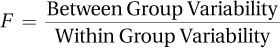
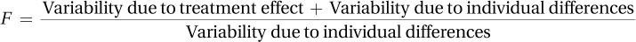

10.1 Introduction to Analysis of Variance
 StatClips: ANOVA – Background and IntroductionVideo on LaunchPad
StatClips: ANOVA – Background and IntroductionVideo on LaunchPad
Analysis of Variance Terminology
Analysis of variance, called ANOVA for short, is a family of statistical tests used for comparing the means of two or more groups. This chapter focuses on between-subjects, one-way ANOVA. Between-subjects, one-way ANOVA is an extension of the independent-samples t test, so it is used to compare means when there are two or more independent samples.
Between-subjects is ANOVA terminology for independent samples.
Way is ANOVA terminology for an explanatory variable. Ways can either be independent variables or grouping variables. (Independent variables are controlled by the experimenter, who assigns subjects to groups. Grouping variables are naturally occurring characteristics used to classify subjects into different groups.)
330
A one-way ANOVA has one explanatory variable, either an independent variable or a grouping variable. A two-way ANOVA would have two explanatory variables, a three-way ANOVA would have three, etc.
Though the explanatory variable in ANOVA is either a grouping variable or an independent variable, it becomes tedious to use both terms. Most statisticians get a bit casual with language and simply call it an independent variable; we’ll continue calling them, generically, explanatory variables. Of course, when it is an independent variable, we’ll call it that.
An explanatory variable in ANOVA is also called a factor, so a one-way ANOVA can also be called a one-factor ANOVA.
Level is the term in ANOVA for a category of an explanatory variable. The grouping variable sex, for example, has two levels—male and female.
To clarify all this terminology, here’s a question where a between-subjects, one-way ANOVA would be used: Is there a difference in artistic ability among right-handed, left-handed, and ambidextrous people? This question could be answered by gathering a sample of people and classifying them into three groups: (1) right-handed people, (2) left-handed people, and (3) ambidextrous people.
Now there are three samples. The samples are independent samples as who is in one sample does not control or determine who is in another sample.
Next, artistic ability is measured with an interval-level scale. Because the dependent variable, artistic ability, is measured at the interval level, the mean level for each of the three groups can be calculated. Means can also be calculated for ratio-level variables, so ANOVA may be used when the outcome variable is measured at the interval or ratio level.
Table 10.1 illustrates this experiment with one cell for each sample. There is one row with three columns. The row represents the explanatory variable of handedness, what in ANOVA terminology is called the way or the factor. The columns represent the three levels of the explanatory variable: right-handed, left-handed, and ambidextrous.
Why ANOVA Is Needed
t tests compare means between groups, so why is analysis of variance even needed? ANOVA is needed in order to keep the risk of Type I error at a reasonable level when comparing means of multiple groups. (Remember: Type I error occurs when a researcher erroneously concludes that there is a statistically significant difference.)
To see why this is a problem, consider a study with five conditions—for example, four different medications and a placebo being tested in treating some disease. It would be possible to analyze the data from these five conditions using a series of t tests. For example, a researcher could compare the mean of Condition 1 to Condition 2, the mean of Condition 1 to Condition 3, the mean of Condition 1 to Condition 4, and so on as shown in Table 10.2. This would require completing 10 t tests.
331
It is tedious to do 10 t tests, but that is not why ANOVA is preferred. The real problem is that the likelihood of making a Type I error increases as the number of t tests increases. Scientists usually set alpha, the probability of a Type I error, at .05, so that they have a 5% chance of making this error. But, with 10 separate tests, the overall alpha level rises to be close to 50%. This means that there is close to a 50% chance that 1 of the 10 t tests will reach the wrong conclusion, rejecting the null hypothesis when it is true. Those are not good odds. And, the experimenter won’t know which, if any, of the statistically significant results is erroneous.
Analysis of variance solves the problem of having a large risk of Type I error, what statisticians call runaway alpha. With ANOVA, one test is completed with a specified chance of Type I error. As with t tests, the alpha level, the chance of committing a Type I error, is usually set at .05. One test—the ANOVA—compares all the means at once and determines if any two of the means have a statistically significant difference. If the ANOVA is statistically significant, then the researcher performs what is called a post-hoc test. A post-hoc test is a follow-up test, engineered to find out which pairs of means differ while keeping the overall alpha level at a specified level, again, usually .05.
Here’s a metaphor for how analysis of variance and post-hoc tests work together. Imagine standing outside of a football stadium on the day of a big game and hearing a loud roar. From the roar, one would know that something significant has happened in the game. That’s analysis of variance—it indicates, in general, that something interesting has happened, but it doesn’t state specifically what happened. To find out what has happened at the game, one needs to buy a ticket and go into the stadium. Going into the stadium is like doing a post-hoc test. Post-hoc tests are only conducted in analysis of variance when one is sure there is something interesting to be found.
What ANOVA Does
With this background on ANOVA, let’s learn why it is called analysis of variance and how it works. ANOVA works by analyzing a set of scores and separating out the different sources of variability in the scores.
To understand this, imagine investigating the effect of alcohol on intoxication. Suppose research participants come to a laboratory where each person consumes one beer. After 20 minutes, researchers measure the level of intoxication by observing the effects of the alcohol on each person’s performance on a behavioral task, say, walking a straight line. The higher the intoxication score, the poorer is the ability to walk in a straight line.
332
Figure 10.1 shows the expected results—not everyone would have exactly the same intoxication score. Rather, there is variability in the scores—with some people acting quite intoxicated, some people not acting at all intoxicated, and most clustered around the average score. Even though everyone received exactly the same dose of alcohol, not everyone reacted in exactly the same way. This variability within a group that receives the same treatment is called within-group variability. Within-group variability is primarily caused by individual differences, attributes that vary from case to case. So, how much one weighs, how recently one has eaten, and how much prior experience one has had with alcohol will all affect a person’s intoxication score. These are all individual difference factors.
Within-group variability can be reduced by making the sample more homogeneous, but the effect of individual differences can’t be eliminated entirely. For example, if all participants were men who weighed 175 pounds, had eaten dinner 30 minutes ago, and had been consuming alcohol regularly for over a year, there would still be variability within that group on the intoxication scores.
Within-group variability is one type of variability in analysis of variance. The other type of variability for a one-way ANOVA is between-group variability. Between-group variability is variability that is due to the different “treatments” that the different groups receive.
Figure 10.2 shows the distribution of intoxication scores for two groups—one group where each participant drank one beer and one group where each participant drank a six-pack. Individual differences explain the variability within a group, but the different doses of alcohol explain the differences between groups, why one group is more intoxicated than the other. This is called the treatment effect because it refers to the different ways that groups are treated. The treatment effect shows up as an impact on the outcome variable (here, the intoxication score) and is associated with the explanatory variable (here, the dose of alcohol, which is controlled by the experimenter).
333
Between-group variability in one-way ANOVA is made up of two things: the treatment effect and individual differences. We’ve already covered how treatment plays a role in between-group variability. Now, let’s see how individual differences play a role in between-group variability.
Imagine a large group of people randomly divided into two groups. Because of random assignment, the two groups should be fairly similar in terms of sex, weight, time since last meal, experience with alcohol, and so on. Now, each person in each group consumes the same dose of alcohol and is measured for intoxication level. Both groups are similar in terms of their characteristics and receive exactly the same treatment. Will the mean intoxication scores of the two groups be exactly the same? No. Because individual differences exist, the two groups will have slightly different means. Between-group variability is due both to individual differences and treatment effect.
How ANOVA Uses Variability
To understand how ANOVA uses within-group variability and between-group variability to see if there is a statistically significant difference, look at the two panels in Figure 10.3. Each panel represents groups that are randomly assigned to receive three different treatments for some illness. Treatment, the explanatory variable, has three levels. The top panel (A) depicts an outcome where there is little impact of treatment on outcome.

The top panel shows little effect of the independent variable because the three means (M1, M2, and M3) are very close to each other. In contrast, the bottom panel (B), where the means (M4, M5, and M6) are far apart, shows that treatment has an impact on outcome because the different treatments lead to dramatically different outcomes.
334
Analysis of variance could be used to analyze these results. ANOVA would show that the results in the top panel are not statistically significant, while the results in the bottom panel are statistically significant. How does analysis of variance lead to these conclusions?
Look at the means in each panel. Note that there is little variability among the means in the top panel and a lot of variability among the means in the bottom panel. Little variability exists in the top panel as all the means are close to each other. The greater distance between the means in the bottom panel indicates more variability between the means there. In the language of ANOVA, there is more between-group variability when the effect of treatment is large (the bottom panel) than when the effect of treatment is small (the top panel).
One-way analysis of variance calculates the ratio of between-group variability to within-group variability.
Figure 10.4 shows how the total variability in the data is partitioned into between-group variability and within-group variability. To decide if the amount of between-group variability is large or small, ANOVA compares it to within-group variability. One-way analysis of variance calculates the ratio of between-group variability to within-group variability. This is called an F ratio, in honor of Sir Ronald Fisher, who developed the procedure.

The F ratio works because within-group variability is made up of individual differences, while between-group variability includes treatment effect and individual differences. So, the F ratio could be rewritten as

335
Here’s what the F ratio, also known just as F, means:
If there is no treatment effect, then there is no variability due to treatment and the variability indicated by the numerator of the F ratio is due only to individual differences.
As a result, the F ratio has the same numerator (individual differences variability) and denominator (individual differences variability), so it will equal 1.
As the effect of treatment grows, the numerator becomes larger than the denominator, and the F ratio climbs above 1. (Remember, treatment effect refers to the impact of the explanatory variable.)
As the F ratio increases, as it climbs higher above 1, the results are more likely to be statistically significant.
As variability is never negative, the F ratio can’t go below 0.
Figure 10.5 gives an example of what the F distribution looks like. Note that it starts at 0, has a mode near 1, and tails off to the right. F gets bigger when there is more between-group variability than within-group variability.
336
A Common Question
Q Looking at the ratio of between-group variability to within-group variability is a clever way to see if means differ. Could an ANOVA be used instead of a t test when there are just two groups?
A Yes. ANOVA can be used when comparing two or more means. In fact, a t test is just a variation on ANOVA. If a researcher has two groups, calculates a t value, and then squares the t value, it will be equal to the F ratio obtained by analyzing the same data with an ANOVA.
Practice Problems 10.1
Review Your Knowledge
10.1 What makes up within-group variability?
10.2 What makes up between-group variability?
10.3 An F ratio is a ratio of what divided by what?
10.4 When is a post-hoc test used?